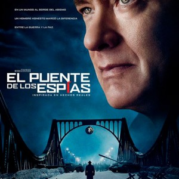

Spotlight
Spotlight es una película dramática estadounidense de 2015 dirigida por Tom McCarthy y escrita por
McCarthy
y Josh Singer. La película está protagonizada por Michael Keaton, Mark Ruffalo, Rachel McAdams, Liev
Schreiber, John Slattery y Stanley Tucci. La película se basa en la historia real del equipo de
investigación periodística "Spotlight" del periódico The Boston Globe y su investigación sobre los casos
de abuso sexual infantil en la Arquidiócesis de Boston.

El renacido
El renacido (The Revenant) es una película de drama y aventura estadounidense de 2015 dirigida por
Alejandro González Iñárritu y protagonizada por Leonardo DiCaprio, Tom Hardy, Domhnall Gleeson, Will
Poulter y Paul Anderson. La película está basada en la novela homónima de Michael Punke y se inspira en
hechos reales ocurridos en el siglo XIX en el territorio de Montana.

Puente de espias
Puente de espías (Bridge of Spies) es una película de drama histórico y thriller estadounidense de 2015
dirigida por Steven Spielberg y protagonizada por Tom Hanks, Mark Rylance, Amy Ryan, Alan Alda y
Sebastian Koch. La película está basada en hechos reales ocurridos durante la Guerra Fría y se centra en
la historia del abogado estadounidense James B. Donovan, quien es reclutado por la CIA para negociar el
intercambio de prisioneros entre Estados Unidos y la Unión Soviética.

La habitacion
La habitación (Room) es una película de drama y suspenso irlandesa-canadiense de 2015 dirigida por Lenny
Abrahamson y protagonizada por Brie Larson, Jacob Tremblay, Joan Allen y William H. Macy. La película
está
basada en la novela homónima de Emma Donoghue y cuenta la historia de una mujer y su hijo que han estado
cautivos en una pequeña habitación durante años.

Brooklyn
Brooklyn es una película de drama romántico irlandesa-británica-canadiense de 2015 dirigida por John
Crowley y protagonizada por Saoirse Ronan, Emory Cohen, Domhnall Gleeson y Jim Broadbent. La película
está
basada en la novela homónima de Colm Tóibín y cuenta la historia de una joven irlandesa que emigra a
Brooklyn en la década de 1950 en busca de una vida mejor.

Marte
Marte (The Martian) es una película de ciencia ficción y aventura estadounidense de 2015 dirigida por
Ridley Scott y protagonizada por Matt Damon, Jessica Chastain, Kristen Wiig, Jeff Daniels y Chiwetel
Ejiofor. La película está basada en la novela homónima de Andy Weir y cuenta la historia de un
astronauta
que queda atrapado en Marte y debe encontrar una manera de sobrevivir mientras espera ser rescatado.